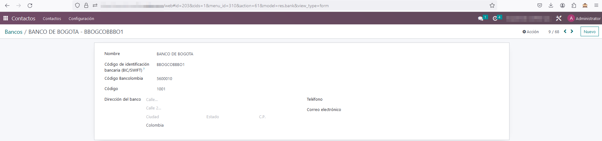
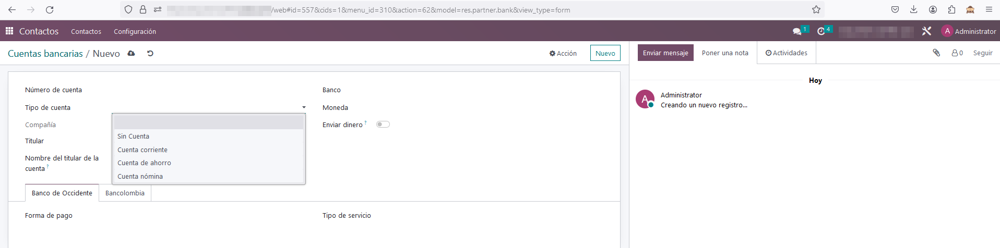

Dispersión de pagos (Base)
Este módulo añade, a través de archivos de datos, los diferentes bancos con los que se puede trabajar en Colombia. También agrega un nuevo campo para manejar un código que poseen los bancos, el cual difiere del código BIC.

En el formulario de cuentas bancarias de terceros, se añade un campo para identificar un tipo de cuenta según lo establecido en Colombia.
En el formulario de pagos a proveedores se añade un campo que se carga automáticamente según el banco del tercero, para especificar el tipo de cuenta.
En la configuración del módulo de facturación se incorpora un menú llamado "Pagos dispersos", el cual incluye un submenú denominado "Dispersiones bancarias". Este último almacena el historial de las dispersiones realizadas, detallando los pagos efectuados y los archivos asociados.